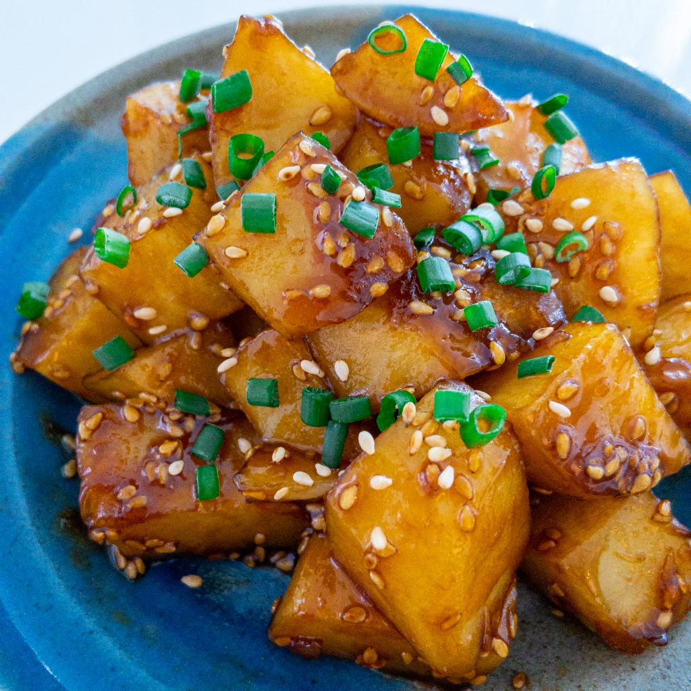

Honey Garlic Potatoes

A classic side dish found at Korean BBQ joints that I love so much.
This side dish is a sweet yet slightly savory potato dish that can be served warm or chilled. I prefer it chilled as it helps to
counter act the heat of Korean BBQ. This dish is also fairly easy to make!
Ingredients
- 1 kg russet potatoes, around three medium sized potatoes
- 3 Tbsp cooking oil
- 1 cup water
- 2 Tbsp Honey
- 1 Tbsp toasted sesame oil
- 1 Tbsp toasted sesame seeds
- 5 Tbsp soy sauce
- 2 Tbsp brown sugar
- 4 cloves of garlic, minced
Directions
- Cube the potatoes.
- Drizzle oil into a pan and fry the potatoes over medium heat for about 15 minutes, making sure to stir to avoid burning
- Once the outer layer of potatoes is browned, add in the minced garlic, soy sauce, brown sugar, and water.
Bring this to a boil and reduce to a simmer for about 15 minutes or until the sauce becomes thick
- Reduce the heat to a low and add in the honey, sesame oil, and sesame seeds. Mix to incorporate and serve!